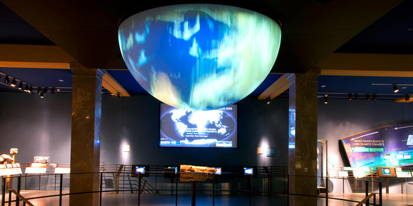

Session 5: Looping Through Files

Overview
Using the tools over the past sessions, we are going to plot thousands of earthquakes, stored in a CSV file. We have downloaded several files already from the USGS, but since they are updated every 15 minutes, the programs are designed to used with any file following the USGS format.